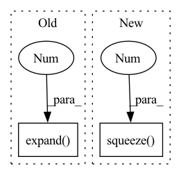

Pattern ID :19767

Before Change
ids, phns, phn_lens = targets
if not train_mode:
// transducer tensor
predictions = predictions.expand(-1, -1, 2, -1)
loss = params.compute_cost(
predictions, phns, [lens.cuda(), phn_lens.cuda()]
)
After Change
stats = {}
if stage != "train":
predictions = predictions.squeeze(2)
loss = -predictions.squeeze(2).max(dim=-1)[0].sum(dim=-1).mean()
seq = ctc_greedy_decode(predictions, lens, blank_id=params.blank_id)
phns = undo_padding(phns, phn_lens)
stats["PER"] = wer_details_for_batch(ids, phns, seq)
In pattern: SUPERPATTERN
Frequency: 3
Non-data size: 2
Instances
Fragment ID: 64469140
Project Name: speechbrain/speechbrain
Commit Name: f189c69c1ca7634a2bd3005af29425992493772b
Time: 2020-06-05
Author: a.heba@irit.fr
File Name: recipes/minimal_examples/neural_networks/ASR_Transducer/example_asr_transducer_experiment.py
M Class Name: TransducerBrain
N Class Name: TransducerBrain
M Method Name: compute_objectives(4)
N Method Name: compute_objectives(4)
M Parent Class: sb.core.Brain
N Parent Class: sb.core.Brain
M File Name: recipes/minimal_examples/neural_networks/ASR_Transducer/example_asr_transducer_experiment.py
N File Name: recipes/minimal_examples/neural_networks/ASR_Transducer/example_asr_transducer_experiment.py
M Start Line: 73
M End Line: 86
N Start Line: 70
N End Line: 86
'>
Before Change
// ImageNet均值、方差
t_mean = torch.FloatTensor((0.485, 0.456, 0.406)).view(3, 1, 1).expand(3, 224, 224)
t_std = torch.FloatTensor((0.229, 0.224, 0.225)).view(3, 1, 1).expand(3, 224, 224)
// 1. [B,C,H,W]->[C,H,W] 2. 反归一化
rgb_img = img_tensor.cpu().squeeze(0) * t_std + t_mean
// 1. RGB->BGR 2. [C,H,W] -> [H,W,C]
After Change
// 反归一化、RGB->BGR、[B,C,H,W] -> [B,H,W,C]
bgr_img = tensor2img(img_tensor.cpu(), BCHW2BHWC=True)
bgr_img = bgr_img.squeeze(0).numpy()
try:
with cam_algorithm(model=model, target_layers=target_layers) as cam:
'>
Fragment ID: 64469136
Project Name: bobo0810/classification
Commit Name: b25ef439a84acfc9d9a7a606bad1cf32b6592bfc
Time: 2022-04-06
Author: lipengbo@kanzhun.com
File Name: Utils/tools.py
M Class Name: AnonimousClass
N Class Name: AnonimousClass
M Method Name: vis_cam(4)
N Method Name: vis_cam(4)
M Parent Class:
N Parent Class:
M File Name: Utils/tools.py
N File Name: Utils/tools.py
M Start Line: 138
M End Line: 144
N Start Line: 160
N End Line: 161
'>
Before Change
torch.ones(1, 1, dtype=self.t.dtype, device=self.device),
)
)
a = (end_nodes - start_nodes) / (t0[1:] - t0[:-1]).expand(-1, D) // (num_edges)xD
b = start_nodes - a * t0[:-1].expand(-1, D) // (num_edges)xD
idx = (
After Change
) // use this if nodes are equi-distant
tt = t.view((-1, 1, 1)).expand(-1, B, D)
result = a[idx] * tt + b[idx] // (num_edges)xBxD
return result.permute(1, 0, 2).squeeze(0) // Bx(num_edges)xD
class CubicSpline(BasicCurve):
'>
Fragment ID: 64469133
Project Name: machinelearninglifescience/stochman
Commit Name: bc92c7edddb2f19f51f7f73909c7c80f8bd53fce
Time: 2021-01-25
Author: skaftenicki@gmail.com
File Name: stochman/curves.py
M Class Name: DiscreteCurve
N Class Name: DiscreteCurve
M Method Name: forward(2)
N Method Name: forward(2)
M Parent Class: BasicCurve
N Parent Class: BasicCurve
M File Name: stochman/curves.py
N File Name: stochman/curves.py
M Start Line: 143
M End Line: 161
N Start Line: 168
N End Line: 186